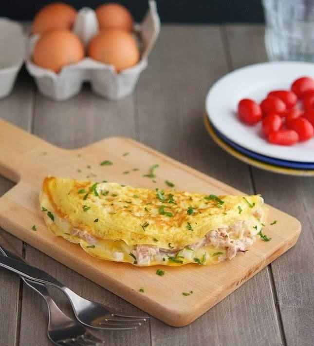

Omelet Relleno con ensalada de Atun

Una plato refrescante para un almuerzo caluroso o una cena liviana. Probalo, te va a encantar.
Ingredientes
- 2 huevos (por persona)
- Sal a gusto
- Pimienta a gusto
- 1 cucharada de Mayonesa Hellmann's Clásica
- 170 gramos de atún en trozos al natural (1 lata)
- 2 tomates
- 1 cebolla morada
- 1 pepino
- 200 gramos de chauchas
- 4 corazones de lechuga
- 1 taza de aceitunas negras
- 4 cucharadas de perejil picado
- 1 cucharadita de jugo de limón
Pasos
- Pelá la cebolla y cortala en pluma lo más finita posible. Colocala en agua helada por unos minutos para que se ponga bien turgente.
- Cortá el pepino al medio y con la ayuda de una cucharita retirá las semillas. Cortalo en rodajas finas. Picá las aceitunas.
- Cortá los tomates y retirares las semillas.
- Blanqueá las chauchas unos minutos, cortá la cocción y cortalas.
- Mezclá el atún con una cucharada de mayonesa, el jugo de limón, la sal y la pimienta.
- Mezclá todos los ingredientes.
- Rompé ligeramente la liga de los huevos, la mayonesa, la sal y la pimienta.
- Calentá una sartén de teflón o hierro y enmantecá muy bien la superficie.
- Bajá el fuego e incorporá los huevos moviendo la sartén para que cubra toda la superficie.
- Cuando comienza a cuajar con la ayuda de una espátula de teflón da vuelta, dejá unos segundos y retirá.
- Rellená el omelette con la preparación y serví enseguida con una tostada.